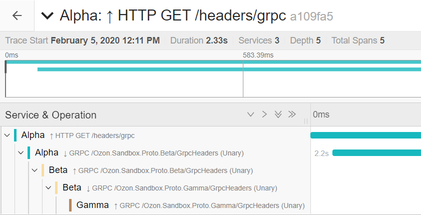
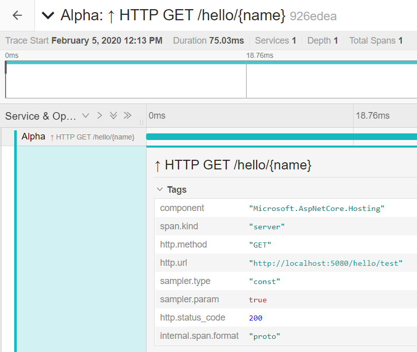
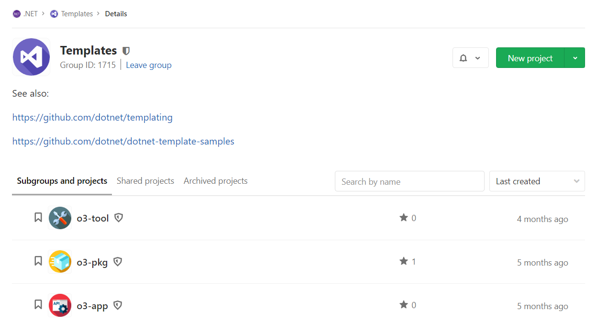
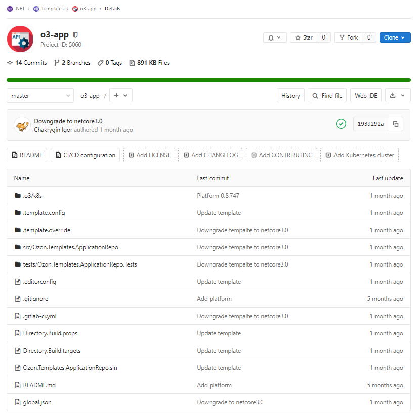

Новости .NET платформы
Игорь Чакрыгин | 
Ozon.Platform
gRPC
- Переход на gRPC от Microsoft
- Библиотека Ozon.Grpc.AspNetCore
больше не поддерживается - Пока есть сложнрсти с генерацией
клиентов через grpc-nuget
Пример gRPC сервера
public class Startup
{
public void ConfigureServices(IServiceCollection services)
{
services.AddGrpc();
services.AddControllers();
}
public void Configure(IApplicationBuilder app, IHostEnvironment env)
{
app.UseRouting();
app.UseEndpoints(builder =>
{
builder.MapControllers();
builder.MapGrpcService<GreeterService>();
});
}
}
Конфигурация Kestrel
var host = Host.CreateDefaultBuilder(args)
.ConfigureWebHostDefaults(webBuilder => webBuilder
.UseStartup<Startup>()
.ConfigureKestrel(options =>
{
options.Listen(IPAddress.Any, 80, listenOptions =>
listenOptions.Protocols = HttpProtocols.Http1);
options.Listen(IPAddress.Any, 82, listenOptions =>
listenOptions.Protocols = HttpProtocols.Http2);
options.Listen(IPAddress.Any, 84, listenOptions =>
listenOptions.Protocols = HttpProtocols.Http1);
}))
.Build();
Пример gRPC клиента
public class Startup
{
public void ConfigureServices(IServiceCollection services)
{
services.AddGrpcClient<Greeter.GreeterClient>(options =>
{
options.Address = new Uri("...");
});
}
// ...
}
Http2UnencryptedSupport
AppContext.SetSwitch(
"System.Net.Http.SocketsHttpHandler.Http2UnencryptedSupport", true);
Изменения в метриках и трассировках
- Обновили Prometheus.Client до 3.1+
- Переделали метрики для HTTP и GRPC
(форкнули OpenTracing.Contrib.NetCore) - Диагностики для Npgsql так и не появились.
Нужно использовать Ozon.Diagnostics.Npgsql - Диагностики для EntityFramework
больше не будут использоваться.
ICollector (вместо IOnDemandCollector)
internal sealed class AppMetricsCollector : ICollector
{
public AppMetricsCollector()
{
Configuration = new CollectorConfiguration(nameof(AppMetricsCollector));
MetricNames = new[]
{
"ozon_app_build_info",
"ozon_app_metrics_standard",
};
// ...
}
public ICollectorConfiguration Configuration { get; }
public IReadOnlyList<string> MetricNames { get; }
// ...
}
ICollector (вместо IOnDemandCollector)
internal sealed class AppMetricsCollector : ICollector
{
// ...
public void Collect(IMetricsWriter writer)
{
writer
.WriteMetricHeader("ozon_app_build_info", MetricType.Gauge)
.WriteSample(0.0, labels: _buildInfoLabels)
.EndMetric();
writer
.WriteMetricHeader("ozon_app_metrics_standard", MetricType.Gauge)
.WriteSample(0.0, labels: _metricsStandardLabels)
.EndMetric();
}
}
Улучшения в названиях спанов и метрик
Улучшения в названиях спанов и метрик
Ozon.Diagnostics.Npgsql
using NpgsqlDiagnosticsConnection connection =
new NpgsqlConnection(ConnectionString).WithDiagnostics();
using NpgsqlDiagnosticsCommand command =
new NpgsqlCommand(Query, (NpgsqlConnection) connection).WithDiagnostics();
connection.Open();
// ...
Ozon.Diagnostics.Npgsql.EntityFrameworkCore
public class Startup
{
public void ConfigureServices(IServiceCollection services)
{
services.AddDbContext<DbContext>(builder =>
{
builder.UseNpgsql("...");
builder.UseNpgsqlDiagnostics();
});
// ...
}
// ...
}
Swagger
- RC версии не работали с Endpoint Routing
- Swagger не работал на 84 порту из-за CORS,
перенесли на 80 порт. - Поддержка нескольких режимов работы
Отключение Swagger
var host = Host.CreateDefaultBuilder(args)
.ConfigureWebHostDefaults(webBuilder =>
{
webBuilder.UsePlatform<Startup>(options =>
{
options.SwaggerMode = PlatformSwaggerMode.Disabled;
});
})
.Build();
Ozon.Platform.Etcd
- Обновление EtcdClient
- Поддержка балансировки
Ozon.Platform.Etcd
var host = Host.CreateDefaultBuilder(args)
.ConfigureWebHostDefaults(webBuilder =>
{
webBuilder
.UsePlatform<Startup>()
.UsePlatformEtcd();
})
.Build();
Ozon.Platform.Vault
- Несколько реализаций,
у нас используется последняя - Указать в vaules.yaml:
vaultScheme: "2" - LDAP для локальной разработки:
vault login -address=https://vault.s.o3.ru:8200 -method=ldap -username=%username%
Ozon.Platform.Vault
var host = Host.CreateDefaultBuilder(args)
.ConfigureWebHostDefaults(webBuilder =>
{
webBuilder
.UsePlatform<Startup>()
.UsePlatformVault(project: "dotnet/sandbox/vault");
})
.Build();
Ozon.Migrations
- Entity Framework Core
- Evolve
Ozon.Migrations.EntityFrameworkCore
public class Program
{
public static void Main(string[] args)
{
var host = CreateHostBuilder(args)
.Build();
host.RunWithMigrate<DatabaseContext>(args);
}
// ...
}
Ozon.Migrations.Evolve
- https://github.com/lecaillon/Evolve
- Поддержка двух видов миграций:
- Versioned Migration:
V1_3_1_1__Create_some_table.sql - Repeatable Migration:
R__Create_some_views.sql
- Versioned Migration:
Ozon.Migrations.Evolve
public class Program
{
public static void Main(string[] args)
{
var host = CreateHostBuilder(args)
.Build();
host.RunWithMigrate(configuration =>
{
return configuration.GetConnectionString("Database");
});
}
// ...
}
Шаблоны .NET проектов
Кастомные шаблоны проектов
.NET Application Repo Template (o3-app)
dotnet nuget locals http-cache --clear
dotnet new --install Ozon.Templates.ApplicationRepo \
--nuget-source https://nuget.ozon.ru/nuget
dotnet new o3-app --name Ozon.Example.MyApp \
--app-name "dotnet-example" \
--app-namespace "dotnet"
.NET Packages Repo Template (o3-pkg)
dotnet nuget locals http-cache --clear
dotnet new --install Ozon.Templates.PackagesRepo \
--nuget-source https://nuget.ozon.ru/nuget
dotnet new o3-pkg --name Ozon.Example.MyPkg
Собственные шаблоны проектов - репозиторий
Собственные шаблоны проектов - .gitlab-ci.yml
include:
- project: 'dotnet/ci/template'
ref: '0.8'
file: 'template.netcore3.0.gitlab-ci.yml'
variables:
TEMPLATE_VERSION: '0.1'
GitLab CI
.gitlab-ci.yml
include:
- project: 'dotnet/ci/application'
ref: '0.8'
file: 'application.netcore3.0.gitlab-ci.yml'
variables:
APP_NAME: 'exch-joborch-table2kafka-v2'
APP_NAMESPACE: 'exch'
APP_VERSION: '0.1'
GitLab CI
- Common Pipeline d
- Переменные APP_NAME и APP_NAMESPACE
Актуализация документации
- https://confluence.ozon.ru/display/DOTNET
- .NET Onboarding
Планы и идеи на будущее
- Разбираемся с SSO (Keycloak),
постараемся сделать доку - Пайплайн для протофайлов
- Пайплайн для dtrack (аудит уязвимостей)
- Пайплайн для интеграционных тестов